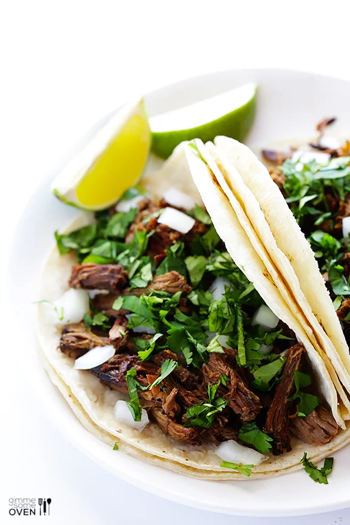

Barbacoa

This barbacoa recipe is simple to make in your slow cooker,
and makes the most tender, flavorful, delicious barbacoa beef.
Ingredients
- 3 pounds beef chuck roast (fat trimmed), cut into 2-inch chunks
- 4 cloves garlic, minced
- 2 chipotles in adobo sauce, chopped
- 1 (4-ounce) can diced green chiles
- 1 small white onion, finely chopped
- 1/4 cup fresh lime juice
- 2 tablespoons apple cider vinegar
- 3 bay leaves
- 1 tablespoon ground cumin
- 1 tablespoon dried Mexican oregano (or standard dried oregano)
- 2 teaspoons fine sea salt
- 1 teaspoon freshly-ground black pepper
- 1/4 teaspoon ground cloves
- 1/2 cup beef stock or water
Instructions
-
Slow cook.Combine all ingredients in the bowl of a
slow cooker. Toss gently to combine. Cover and cook on low for 6-8
hours, or on high for 3-4 hours, or until the beef is tender and
falls apart easily when shredded with a fork.
-
Shred and toss.Using two forks, shred the beef into
bite-sized pieces inside of the slow cooker. Toss the beef with the
juices, then cover and let the barbacoa beef soak up the juices for
an extra 10 minutes. Remove the bay leaves.
-
Serve.Use a pair of tongs or a slotted spoon to
serve the barbacoa beef and enjoy!